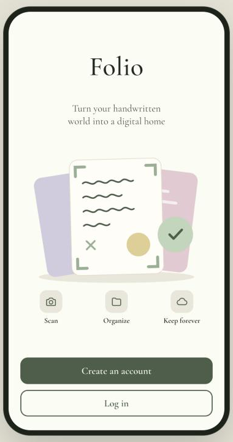
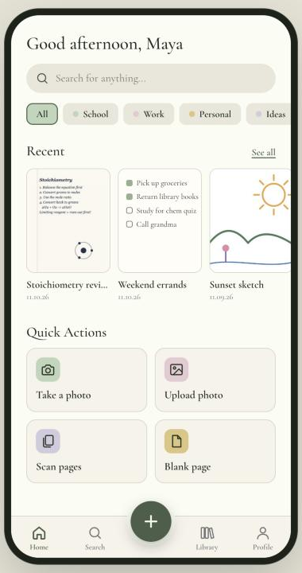
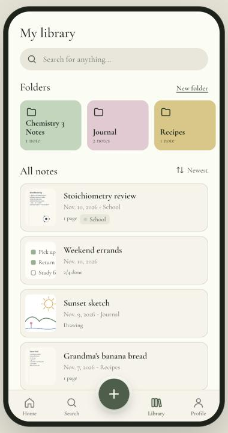
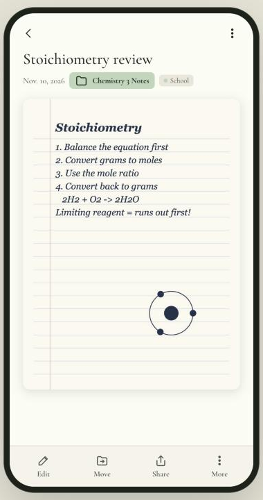
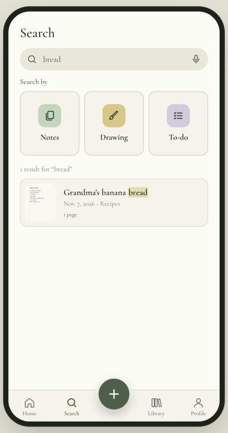

Folio is an iPhone app for people who still think on paper. Snap a page of class notes, a recipe card or a sketch, and Folio cleans it up, files it away and makes it easy to find again.





Take or upload a photo, crop it to the page, and add several pages to one note.
Whiten the paper and sharpen the ink, or adjust brightness, contrast and filters.
Sketch with coloured pens, or keep to-do lists you can tick off.
Folders, colour tags and search keep every page within reach.
Your library is private to your account and syncs across your devices, with a copy on your phone so it works offline.